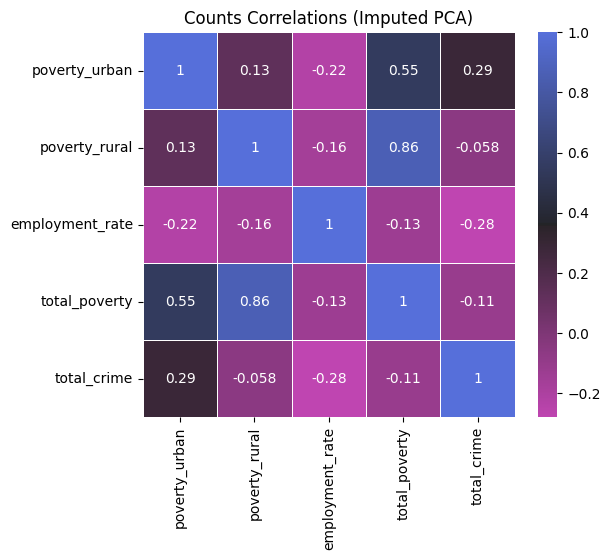
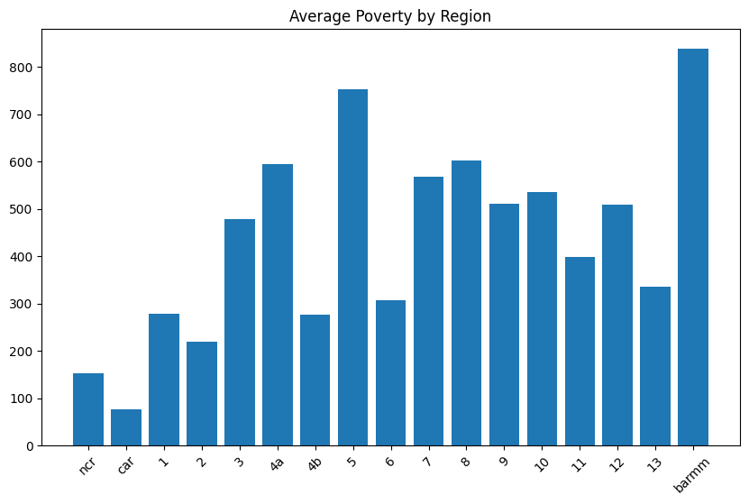
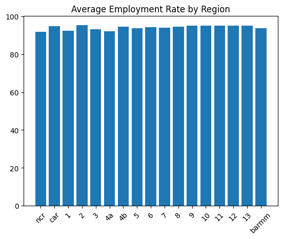
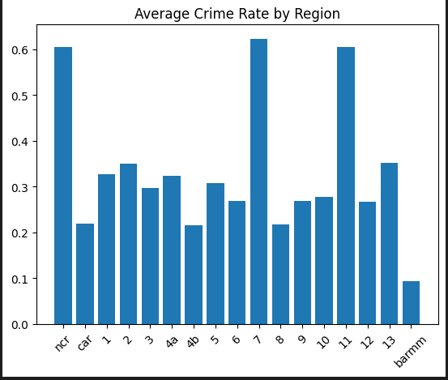

With the data preprocessed and ready, we can now analyze the data to uncover patterns and insights regarding the relationship between poverty, employment, and crime rates across Philippine regions. For now, let's answer our research questions! For a more detailed explanation, proceed to our GitHub repository, specifically the data_analysis.ipynb!
Before explaining the answers to the research questions. Do note that we tried 4 different approaches to determine and look for possible trends and correlations to properly answer the research questions. Direct Analysis, Tolerance of Gaps, Imputation and Time Series Forecasting, and Imputation + Principal Component Analysis (PCA) were and analyzed. Each approach gave insights on the available data, and the last method, Imputation + PCA, served to be the most insightful for the answers. Learn more about the approaches done in the github repository.
1.) What is the correlation between poverty and employment with crime rates across regions in the Philippines?
Scatter plots were done to visualize the relationships of poverty and employment with crime. We compared urban poverty-total crime, rural poverty-total crime, and employment rate-total crime.
Using these data plots, there is no obvious pattern or trend among the collection of points. Urban-Crime seems to show a slowly rising trend with the more urban population having more crimes committed. The Rural-Crime graph shows a bit of random points, and the same goes for the Employment-Crime graph. A deeper analysis must be done in order to determine the underlying trends that is not so clear to the naked eye. A correlation heatmap graph is done to visualize the and numericize the correlations.

Analyzing this correlation heatmap, it seems that urban poverty has the greatest correlation among the other variables with respect to the total crimes committed in a region. Then, employment rate takes the second indicator, tho note that it shows a negative correlation, and finally rural poverty which shows a very close to 0 correlation.
There could be many reasons for this, such as a more "relaxed" life in rural areas or provinces and other cultural reasons. For now, we will keep it as is. This is not a worry as this observed relationship and reasoning will be further discussed in the findings.
This correlation heatmap graph, directly answers research question number 1. Now let us look at a more "regional" perspective and point of view.
2.) How do regional variations in these socioeconomic and institutional factors (i.e., poverty and employment) influence differences in crime rates?
Here, we would like to analyze the regional variations or in other words, compare the values in each region. We would mainly use the Imputation and Time Series Forecasting approach for this research question.
First, we will show the time series plots and compare the regions.
From these graphs, we can see the regions generally follow the same trends.
Urban poverty rose from 2018 to 2021 possibly due to the pandemic, and some regions started to recover after the peak in 2021 and declined back through 2022 to 2025.
Employment rate also took a huge drop in 2020 possibly due to the pandemic, but it rose back the following year in 2021 and continued to rise or remain stagnant until 2025.'
The total crime per region all have a declining trend from 2018 to 2025.
There does not seem to be much of an outlier except for NCR, which was affirmed in the IQR test in the EDA, approximately having 140,000 total number of crimes during 2018.
Looking at the urban poverty of the regions, and comparing their total number of crimes, we can see a slight correlation or pattern concerning the region.
Specifically observing the top 5 regions in the urban poverty category namely, region 4A, region 3, region 7, region 10, and 12, all of them except region 10 and 12 are also found in the top 5 number of total crimes committed, but with a slight difference in order.
NCR has the most, followed by region 4A, region 7, region 3, and lastly region 11. As explained earlier, there is a slight correlation amongst the number of urban poverty and total number of crime, and this holds true for the top 5 regions.
Moving on to employment, all the regions are not differing that much to each other. Taking the bottom 5 regions in employment rate, we get NCR, region 4A, region 1, region 3, and region 5.
Out of the 5 regions, only 3 of them are in the top 5 of the total number of crimes, and only 2 are also part of the top 5 in urban poverty.
Now looking at the opposite side and checking the bottom 5 regions in the urban poverty categroy, we get regions CAR, 6, 2, 1, and 8.
Now for the employment rate (highest), we get regions, 2, 9, 11, 13, 12, and for total crime (lowest), we get BARMM, CAR, region 4B, 13, 9.
From here we can see that CAR (poverty), and region 9 and 13 (employment rate) are both found in the total crime.
Region 4B is the 6th least number of people classified under urban poverty and region 13 ranked 6th, and region 9 ranked 7th least which shows a bit of a relationship to the low crimes.
However, BARMM, having the least number of crimes committed, actually ranks high in the urban poverty, ranking at 7th, and ranking 4th in rural poverty, and 6th lowest employment rate.
Despite these counterintuitive placements, they rank the lowest number of crimes. This could be due to many factors such as religion and the 2014 peace deal ending the war in the region and the continuous seek to end conflicts.
Now, let's look at the averages throughout the years in a bar graph to compare them easier.



Here, we can see the average crime rate seem to be higher in 3 regions, namely NCR, Region 7 (Central Visayas), and Region 11 (Davao Region). There seems to be some relation on the location of a region on the crime rate, which can be due to employment and poverty rates associated to the said locations.
One thing to notice about this big 3 is that they are also relatively high on the urban poverty in their respective regions which can support the correlation found in research question 1.
3.) To what extent can improvements in these factors (e.g., reduced poverty, increased employment) predict a decrease in crime rates across regions?
This will be answered using the model. Go to the machine learning section.